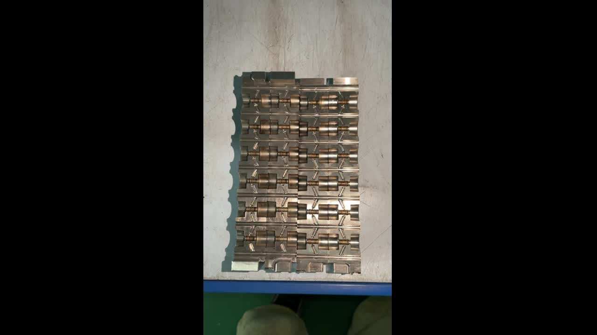

What Is Conformal Cooling?
In every injection molding cycle, cooling accounts for 60–80% of total cycle time. The faster you extract heat from the mold, the more parts you produce per shift. This is where conformal cooling fundamentally changes the game.
Conventional cooling uses straight-drilled channels (gun-drilled holes) machined into the mold. These channels can only follow straight paths — they cannot curve around complex part geometries. The result: uneven cooling, hot spots, longer cycles, and defects like warpage and burn marks.
Conformal cooling uses 3D-printed channels that follow the exact contour of your part geometry. Because the channels are built layer-by-layer via SLM (Selective Laser Melting), they can take any shape — spirals, helixes, branching networks — maintaining a constant distance from the mold surface. The result: uniform heat extraction from every surface simultaneously.

"The cooling channel doesn't have to be straight anymore. It follows the part. That's the fundamental shift — and it changes everything about cycle time, quality, and cost per piece."
Side-by-Side Comparison: Conformal vs Conventional Cooling
This table summarizes the key differences based on our manufacturing experience across 13 documented projects:
| Parameter | Conventional Cooling | Conformal Cooling |
|---|---|---|
| Channel geometry | Straight-drilled only | Any shape — follows part contour |
| Temperature uniformity | ±5–7°C (hot spots common) | ±2–3°C (uniform) |
| Cooling time reduction | Baseline | 20–72% faster |
| Cycle time impact | Baseline | 15–50% shorter total cycle |
| Gate burn marks | Common on PETG, PS, transparent parts | Eliminated |
| Part warpage | Higher (differential shrinkage) | Minimal (uniform shrinkage) |
| Output increase | Baseline | +30% to +73% daily output |
| Insert cost | Lower (conventional machining) | 2–5x higher (3D printing + post-processing) |
| Manufacturing method | Gun drilling, CNC | SLM / DMLS + CNC finishing |
| Design freedom | Very limited | Unlimited |
| Lead time for inserts | 5–10 days | 7–14 days |
| Best for | Simple, uniform parts | Complex geometry, thin walls, transparent materials, high volume |
| ROI payback | — | 1–3 months (high volume) |
Real Factory Data: 13 Documented Projects
Most articles comparing conformal vs conventional cooling cite theoretical benefits or simulation results. We're sharing actual production data from 13 projects manufactured at our facility in Yuyao, Ningbo.

Problem: Gate burn marks on transparent cap. Customer rejected 15% of parts. Conventional cooling couldn't reach deep cavity.
Problem: Low daily output, high unit cost. Conventional cooling gave uneven temperature across large curved surface.
Problem: Deep, narrow cavities impossible to cool conventionally. Long cycle time limiting production capacity.
View All 13 Case Studies with Full Data →
When to Use Conformal Cooling (and When Not To)
Use Conformal Cooling When:
- Complex part geometry — deep cavities, undercuts, curved surfaces that conventional channels can't reach
- Hot spot problems — localized overheating causing warpage, sink marks, or burn marks
- Transparent materials — PETG, PMMA, PS where any burn mark or flow line means rejection
- High production volume — the more parts you run, the faster the ROI on conformal inserts
- Tight cycle time targets — when you need to squeeze more output from existing machines
- Multi-cavity molds — uniform cooling across all cavities reduces cavity-to-cavity variation
Stick with Conventional Cooling When:
- Simple, flat geometry — uniform wall thickness, no deep features
- Low production volume — under 10,000 parts total; ROI may not justify the investment
- No quality issues — current cooling is achieving acceptable cycle times and part quality
- Budget constraints — when the mold budget is strictly fixed with no room for optimization
Cost & ROI: The Real Numbers
The biggest objection to conformal cooling is cost. Let's address it with real numbers.
| Cost Factor | Conventional Insert | Conformal Insert (from China) |
|---|---|---|
| Insert manufacturing cost | $200–$800 | $800–$2,500 |
| Additional cost | — | $600–$1,700 more |
| Cycle time saved per shot | — | 5–15 seconds |
| Extra parts per day (1 machine) | — | +200–500 parts |
| Value of extra parts/day | — | $50–$300/day |
| ROI payback period | — | 2–8 weeks |
For the Xiaomi humidifier mold, the conformal cooling insert paid for itself in under 3 weeks through the increase from 880 to 1,320 pieces per day.
Why China-Made Conformal Cooling Is a Game Changer
European conformal cooling inserts (from EOS, Trumpf, or SLM Solutions service bureaus) typically cost €3,000–€8,000 per insert. The same insert manufactured in our facility in Ningbo costs €800–€2,500 — a 50–70% reduction. Same SLM technology, same materials (420 steel, 18Ni300), same post-processing standards.
This price difference dramatically improves ROI. A conformal insert that takes 6 months to pay back from a European supplier pays back in 6 weeks when sourced from China.
How Conformal Cooling Inserts Are Made
- DFM Review — Our engineers review your mold design (NX, SolidWorks, CATIA) and identify hot spots using Moldex3D thermal simulation
- Channel Design — Conformal cooling channels are designed to follow part contour at optimal distance (typically 2–5mm from mold surface)
- SLM Printing — Inserts are built layer-by-layer on BLT A320 or E-Plus EP-M2 machines in 420 Mold Steel or 18Ni300
- Heat Treatment — Achieves 50–55 HRC hardness for production-grade durability
- CNC Finishing — Critical surfaces machined to final tolerance (±0.02mm). Mirror polish to SPI-A1 where required
- Pressure Test — All cooling channels tested for leaks at 2x operating pressure
- Shipping — DHL Express worldwide, 3–5 days to Europe/US
Frequently Asked Questions
How much does conformal cooling reduce cycle time?
Based on our data from 13 real injection molding projects, conformal cooling reduces cooling time by 20–72% depending on part geometry and material. The average reduction is approximately 40%. The most dramatic case: a PETG bottle cap mold went from 21s to 6s — a 72% reduction.
Is conformal cooling worth the higher initial cost?
Yes, in most high-volume scenarios. While inserts cost 2–5x more, the ROI comes within 1–3 months. The Xiaomi humidifier mold increased output from 880 to 1,320 pcs/day and reduced unit cost from ¥13.6 to ¥10 — paying back in weeks. For simple geometries or low volume, conventional cooling may be sufficient.
What materials are used for conformal cooling inserts?
420 Mold Steel (stainless, corrosion-resistant) and 18Ni300 Maraging Steel (up to 55 HRC). Both are processed via SLM and achieve full density. Surface quality reaches SPI-A1 mirror polish after CNC finishing.
When should I NOT use conformal cooling?
Skip conformal cooling for: (1) simple, uniform parts where drilled channels work fine, (2) very low production volumes, (3) molds with no hot spot issues, or (4) parts already at target cycle time. A Moldex3D thermal simulation can determine if it's worth it for your specific case.
How long does delivery take from China?
7–14 working days production + 3–5 days DHL Express to Europe/US. Total: 2–3 weeks. At 50–70% lower cost than European suppliers.